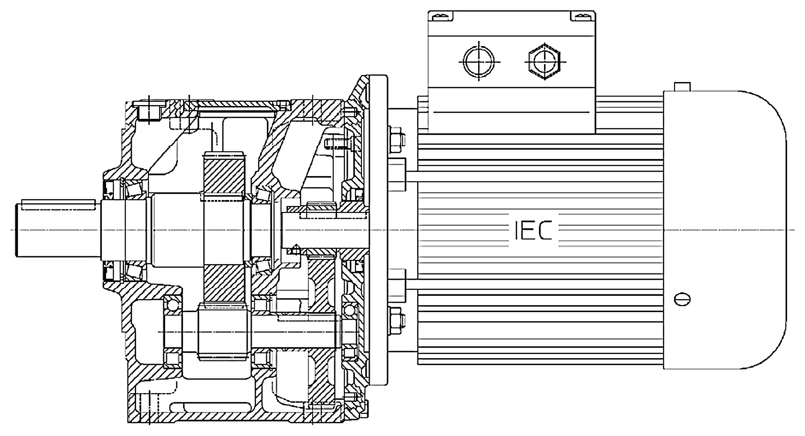
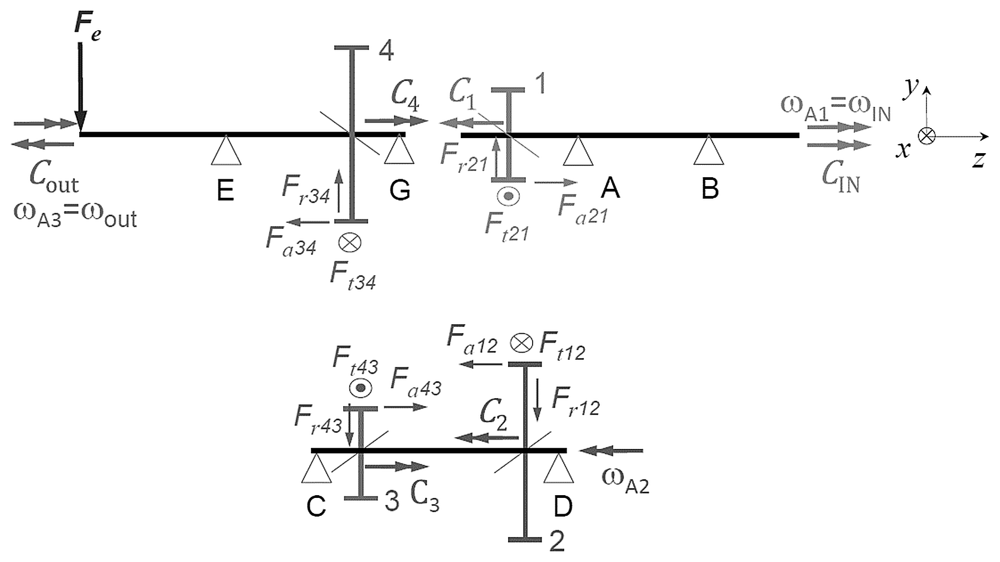
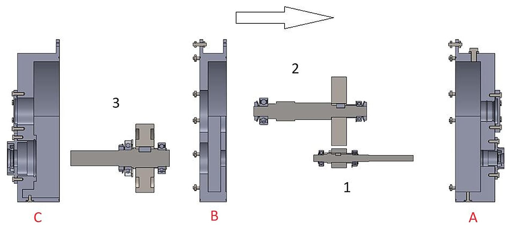

Le specifiche
Il riferimento è un riduttore commerciale coassiale a due stadi con rapporto nominale 12,27, 900 rpm in ingresso, 62 Nm in uscita e una potenza continuativa di 0,34 kW. Il progetto doveva rispettare gli ingombri del modello, garantire ai cuscinetti almeno 25.000 ore di durata e sopportare il carico radiale dell'utilizzatore sull'albero di uscita.

Per gli alberi di ingresso e uscita abbiamo scelto acciaio da bonifica C45; per le ruote e l'albero intermedio 16MnCr5 cementato e temprato.
Ruote dentate
Il numero minimo di denti viene dal limite di interferenza, il modulo dalle formule di Lewis, per la flessione, e di Hertz, per il contatto, poi si sceglie il modulo unificato superiore. Con i denti definitivi il rapporto vale 12,49, entro il 2% di quello nominale, e la condizione di coassialità è rispettata con uno scarto di pochi millesimi di millimetro. Abbiamo verificato rapporto di condotta e di ricoprimento, poi la resistenza statica e a fatica, a flessione al piede e a pitting, secondo ISO 6336-1 con tutti i fattori correttivi.


Alberi
Il dimensionamento degli alberi è iterativo: un primo progetto a sola torsione, poi a flesso-torsione con i diagrammi delle sollecitazioni, infine la verifica statica con il criterio di Tresca. L'albero intermedio, il più sollecitato, è stato verificato anche a fatica nelle sezioni critiche, con effetti di intaglio, dimensione e finitura superficiale e con il diagramma di Haigh. Il pignone dell'albero intermedio è ricavato di pezzo, perché una cava per linguetta avrebbe indebolito troppo il mozzo.


Cuscinetti, lubrificazione e linguette
Abbiamo scelto cuscinetti radiali a sfere, verificati staticamente e a durata. La durata base è stata corretta con il metodo SKF, che tiene conto di viscosità del lubrificante e contaminazione. Con olio ISO VG 460, scelto sull'albero più sollecitato, tutti i cuscinetti superano le 25.000 ore richieste. Le linguette, secondo UNI 6604, sono dimensionate a pressione di contatto e a taglio.

Montaggio e carcassa
Abbiamo definito la sequenza di montaggio degli alberi nei tre elementi della carcassa e il bloccaggio di ogni cuscinetto: solo quello caricato assialmente è vincolato anche sulla cassa, con flangia o anello elastico, mentre l'altro resta libero per assorbire le dilatazioni. Le ruote sono calettate con linguetta e fissate assialmente tra spallamento e distanziale.

Cosa ho imparato
Questo progetto mi ha fatto vivere il processo di progettazione meccanica nella sua forma reale: iterativo, con scelte che si influenzano a vicenda e norme da applicare con attenzione. Ho imparato a passare dal calcolo al disegno, pensando fin dall'inizio a come i componenti verranno montati e bloccati, e a bilanciare resistenza, ingombri e semplicità costruttiva.